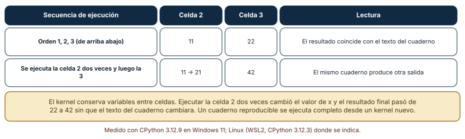
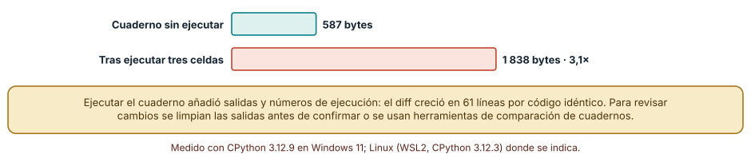
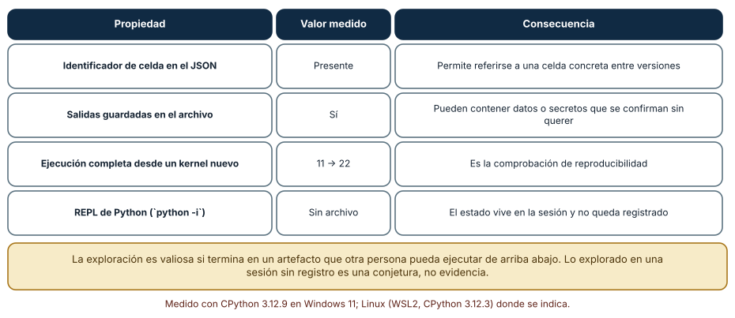

← SE-100 — Compiladores, linters, formatters y análisis estático · ↑ Parte 08 · 📚 Índice completo · 🌐 Portal · SE-102 — Gestores de versiones de runtimes →
Punto profesional y fundamento pedagógico
Punto profesional. La clase existe para usar REPL y notebooks para explorar conservando orden, estado y transición a artefactos reproducibles.
Por qué aparece aquí. Se sitúa después de Compiladores, linters, formatters y análisis estático y antes de Gestores de versiones de runtimes: convierte el conocimiento anterior en una decisión observable que la clase siguiente podrá reutilizar. La continuidad se comprueba en el artefacto, no por compartir vocabulario.
Error conceptual que debe corregir. Creer que celdas visibles documentan el orden ejecutado.
Secuencia de aprendizaje. Antes de leer la solución, el estudiante predice el resultado del caso normal y del error conceptual anterior. Luego explica un caso resuelto paso a paso, construye un contraejemplo que cambie la decisión y, sin consultar el texto, reconstruye el mecanismo y lo aplica a una entrada nueva. La secuencia usa predicción, explicación propia, contraste y recuperación. ICAP distingue participación de construcción de conocimiento; How People Learn II exige conectar conocimiento previo, contexto y transferencia; la práctica de recuperación respalda producir de nuevo la explicación tras una demora; y Education for Life and Work exige devolución que explique la causa del error.
Evidencia de aprendizaje. Exploration-log.md con kernel limpio, orden, dependencia oculta y script extraído. Debe contener predicción previa, observación, explicación causal, contraejemplo, criterio de aceptación y una nota de qué dato haría cambiar la conclusión.
Límite de la conclusión. Una sesión interactiva no es por sí sola un pipeline reproducible.
Trazabilidad fuente → afirmación
| Fuente primaria u oficial | Afirmación que respalda | Lo que no prueba |
|---|---|---|
| Python Debugging and Profiling | Pdb, cprofile, timeit, tracemalloc y límites instrumentales; autoridad: Python Software Foundation | No demuestra por sí sola que el artefacto del estudiante sea correcto. |
| Python venv | Aislamiento de intérprete, scripts y entorno virtual; autoridad: Python Software Foundation | No demuestra por sí sola que el artefacto del estudiante sea correcto. |
| Python interactive mode | documenta el modo interactivo y su estado de sesión | No demuestra por sí sola que el artefacto del estudiante sea correcto. |
| Jupyter messaging protocol | define mensajes y canales entre cliente y kernel | No demuestra por sí sola que el artefacto del estudiante sea correcto. |
Antes de empezar
Esta clase continúa el entorno reproducible de diagnóstico de la Parte 08. Recupera la evidencia de la clase anterior, añade una decisión propia de REPL, notebooks y desarrollo exploratorio y deja un artefacto que la clase siguiente deberá consumir. La pregunta activa es: ¿Cómo explorar rápidamente sin convertir estado invisible y orden de celdas en evidencia falsa?
Prerrequisitos
- Haber completado la clase anterior o reconstruir su contrato y evidencia.
- Python 3.11 o posterior, terminal, editor y Git; un segundo runtime es opcional y debe declararse.
- Trabajar con fixtures sintéticos: ninguna observación necesita datos de una persona o sistema real.
Problema auténtico
Una persona demuestra el fallo en notebook, pero Run all no lo reproduce: una celda antigua modificó datos y una importación conserva código previo.
Objetivos observables
Al terminar podrás explicar los cinco mecanismos de esta clase, predecir su comportamiento antes de ejecutar, construir un caso normal y uno límite, diagnosticar el fallo controlado, comparar una alternativa y entregar evidencia que otra persona pueda reproducir.
Mapa conceptual
Ver la notación fuente del diagrama
flowchart LR
N1[REPL / ciclo de realimentación] --> N2[Notebook / grafo oculto] --> N3[Exploración frente a producto] --> N4[Proveniencia de datos] --> N5[Narrativa / verificación]
N5 -->|fallo o cambio| N1El mapa se lee como una cadena de razonamiento, no como fases obligatorias del runtime. La flecha de retorno indica que un fallo o cambio de requisito obliga a revisar el modelo inicial; no autoriza a parchear solo la última salida.
Temas y por qué importan
| Tema | Por qué cambia una decisión profesional | Evidencia mínima |
|---|---|---|
| REPL y ciclo de realimentación | Read-eval-print permite probar expresiones y observar tipos o invariantes con baja fricción. | Predicción, traza causal y contraejemplo de REPL y ciclo de realimentación en exploration-log.md |
| Notebook y grafo oculto | Visualmente las celdas tienen orden, pero pueden ejecutarse en otra secuencia. | Predicción, traza causal y contraejemplo de Notebook y grafo oculto en exploration-log.md |
| Exploración frente a producto | Explorar tolera caminos muertos y visualización provisional; producto necesita interfaz, pruebas y ownership. | Predicción, traza causal y contraejemplo de Exploración frente a producto en exploration-log.md |
| Proveniencia de datos | Toda tabla o gráfico debe indicar origen, transformación, versión y filtros. | Predicción, traza causal y contraejemplo de Proveniencia de datos en exploration-log.md |
| Narrativa y verificación | Una explicación ordena pregunta, método, resultado y límite. | Predicción, traza causal y contraejemplo de Narrativa y verificación en exploration-log.md |
Conceptos y decisiones
1. REPL y ciclo de realimentación
Read-eval-print permite probar expresiones y observar tipos o invariantes con baja fricción. El proceso conserva nombres, imports y mutaciones. Una sesión útil termina convirtiendo la observación en script o prueba que empieza desde estado limpio.
2. Notebook y grafo oculto
Visualmente las celdas tienen orden, pero pueden ejecutarse en otra secuencia. Salidas persistidas tampoco prueban qué código las produjo. Reiniciar kernel y ejecutar todo revela dependencias; parametrizar separa entrada de estado interactivo.
3. Exploración frente a producto
Explorar tolera caminos muertos y visualización provisional; producto necesita interfaz, pruebas y ownership. Pasar de uno a otro requiere extraer funciones, datos pequeños y un comando reproducible, no desplegar el notebook sin revisión.
4. Proveniencia de datos
Toda tabla o gráfico debe indicar origen, transformación, versión y filtros. Copiar datos manualmente destruye trazabilidad. El entorno reproducible de diagnóstico usa fixtures sintéticos guardados y hashes cuando la fuente es externa autorizada.
5. Narrativa y verificación
Una explicación ordena pregunta, método, resultado y límite. Output rico puede ocultar stderr o truncamiento. Se conserva también una representación textual accesible y una aserción que haga fallar la conclusión incorrecta.
El estado oculto de un cuaderno
Un cuaderno ejecuta celdas sobre un *kernel* que conserva variables. Se creó un cuaderno con tres celdas (x = 1; x = x + 10 y mostrar x; print(x * 2)). Ejecutado de arriba abajo da 11 y 22. Con un kernel real, ejecutando la segunda celda dos veces y luego la tercera, las salidas fueron 11, 21 y 42. El texto del cuaderno no cambió; cambió el orden de ejecución, y con él el resultado. Un cuaderno puede mostrar una salida que ninguna ejecución ordenada reproduce, y quien lo lee no tiene forma de saberlo sin volver a ejecutarlo desde cero.

Cómo leer la figura. La segunda fila repite una celda y cambia el resultado final de 22 a 42 con el mismo texto. Dónde deja de valer: el ejemplo usa estado numérico explícito; los efectos más insidiosos vienen de conexiones, archivos abiertos o generadores aleatorios que sobreviven en el kernel.
Lo que guarda el archivo
Un .ipynb es JSON. El cuaderno sin ejecutar ocupó 587 bytes; tras ejecutarlo, 1 838 bytes (3,1 veces), porque guarda salidas y números de ejecución. La diferencia entre las dos versiones produjo 61 líneas de cambio para un código idéntico. Eso complica la revisión: el diff mezcla código con ruido de ejecución, y las salidas pueden contener datos sensibles que se confirman sin querer. La práctica es limpiar las salidas antes de confirmar, o usar herramientas de comparación específicas. Cada celda tiene un identificador (id) en el JSON, útil para referirse a una celda entre versiones.

Cómo leer la figura. La diferencia de tamaño es información de ejecución, no de código. Dónde deja de valer: con salidas gráficas el archivo crece órdenes de magnitud; este ejemplo usa salidas de texto.
De la exploración al código reproducible
La exploración en un cuaderno o en el REPL es valiosa por su rapidez, pero su producto es una conjetura hasta que se convierta en un artefacto que otra persona pueda ejecutar de arriba abajo. La prueba de reproducibilidad de un cuaderno es sencilla: reiniciar el kernel y ejecutar todas las celdas en orden; si el resultado coincide (aquí, 11 y 22), el cuaderno es reproducible. El REPL de Python no deja archivo: el estado vive en la sesión y no queda registro. En ambos casos, lo que debe sobrevivir a la exploración es un script o una función con pruebas, no una sesión.

Cómo leer la figura. Cada fila liga una propiedad con una consecuencia para la reproducibilidad. Dónde deja de valer: hay herramientas que ejecutan el cuaderno entero de forma automática y lo convierten en un script; el principio es el mismo, la comprobación se automatiza.
Definiciones de trabajo
- repl y ciclo de realimentación: read-eval-print permite probar expresiones y observar tipos o invariantes con baja fricción.
- notebook y grafo oculto: visualmente las celdas tienen orden, pero pueden ejecutarse en otra secuencia.
- exploración frente a producto: explorar tolera caminos muertos y visualización provisional; producto necesita interfaz, pruebas y ownership.
- proveniencia de datos: toda tabla o gráfico debe indicar origen, transformación, versión y filtros.
- narrativa y verificación: una explicación ordena pregunta, método, resultado y límite.
Las definiciones son operativas para el entorno reproducible de diagnóstico. No convierten términos con historia más amplia en sinónimos y deben contrastarse con la documentación primaria enlazada al final.
Ejemplo mínimo
>>> from algorithm_library.priority import key
>>> key({"priority": 5, "arrival": 2})
(-5, 2)
>>> # El hallazgo se traslada a una prueba desde proceso limpio.Antes de ejecutar, predice estado, resultado y error. Después registra versión, comando y salida. Si el fragmento es pseudocódigo o pertenece a otro lenguaje, etiquétalo como tal y no afirmes que fue ejecutado.
Ejemplo profesional
En el entorno reproducible de diagnóstico, una investigación conserva síntoma, entorno, reproducción, hipótesis, observaciones, causa, corrección y regresión. La implementación de esta clase debe conservar ese contrato aunque cambie la forma interna. El caso profesional no pregunta únicamente si produce una salida: pregunta quién puede producirla, qué estado observa, cómo falla y qué rastro permite disputar una decisión incorrecta.
Compara el caso normal con autorización falsa, evidencia incompleta, empate y repetición. Un mecanismo es apropiado cuando esas diferencias quedan visibles y localizadas; es peligroso cuando dependen de orden accidental, estado oculto o una convención que el consumidor no puede conocer.
Práctica guiada
- Copia el contrato de entrada y salida antes de escribir implementación.
- Predice el caso normal y un límite; identifica la invariante que no puede romperse.
- Implementa la versión mínima sin I/O dentro del núcleo.
- Ejecuta el caso y conserva comando, versión y salida bajo
evidence/. - Introduce el fallo controlado, reduce la reproducción y formula dos hipótesis rivales.
- Corrige la causa, añade regresión y ejecuta el conjunto completo.
- Compara con otro paradigma o lenguaje indicando qué semántica se preserva.
Ejercicios
- Orden: predice las salidas de las tres celdas si se ejecuta la 2, luego la 1 y por último la 3; compruébalo.
- Tamaño: compara el tamaño del archivo antes y después de ejecutar un cuaderno tuyo y cuenta las líneas de diff.
- Reproducibilidad: diseña una comprobación automática que ejecute tu cuaderno de cero y compare las salidas.
- Promoción: convierte una exploración tuya en una función con una prueba y explica qué dejaste en el cuaderno.
Reto verificable
Entrega implementación, fixtures, pruebas y un informe corto. Se aprueba si otra persona ejecuta desde checkout limpio, obtiene los mismos resultados y puede relacionar cada rama o transformación con una regla del dominio. No se aprueba por cantidad de archivos ni por usar la sintaxis característica del paradigma.
Caso conductor
El entorno reproducible de diagnóstico parte de una inversión de empates en la biblioteca de estructuras y algoritmos, captura versión y entrada mínima, compara un entorno sano con uno afectado y conserva la primera divergencia observable. Cambia después una sola regla o condición y revisa qué archivos, pruebas y trazas debieron modificarse. Esa superficie de cambio alimenta el proyecto final de la parte.
Preguntas frecuentes
¿Cuándo uso un cuaderno y cuándo un script?
Un cuaderno para explorar y comunicar con salidas visibles; un script (o módulo con pruebas) para lo que debe repetirse. Una exploración que sirve se promueve a script.
¿Cómo evito el estado oculto?
Reiniciando el kernel y ejecutando todo en orden antes de compartir, y evitando depender de celdas ejecutadas fuera de orden. Una comprobación automática lo ejecuta de cero en integración continua.
¿Se pueden revisar cambios de un cuaderno?
Con dificultad si las salidas están incluidas. Se limpian las salidas antes de confirmar o se usan herramientas de comparación de cuadernos que ignoran los metadatos de ejecución.
¿Qué riesgo tienen las salidas guardadas?
Pueden contener datos personales, credenciales impresas por error o rutas del equipo. Se revisan antes de publicar.
Fallo controlado y diagnóstico
Ejecuta celdas fuera de orden hasta que la variable cases contiene un fixture antiguo. Reinicia, Run all, extrae el caso mínimo a JSON y añade una prueba.
Registra síntoma, entrada mínima, hipótesis, observación que descarta cada hipótesis, causa, corrección y prueba de regresión. No cambies simultáneamente implementación, fixture y expectativa.
Reproduce el estado oculto. Crea un cuaderno de tres celdas como el de la Figura 1, ejecútalo en el orden 1, 2, 2, 3 y guarda la salida. Síntoma: el resultado final no coincide con el que obtiene quien lo lee de arriba abajo. Hipótesis: la celda 2 mutó x dos veces. Prueba: reinicia el kernel y ejecuta todo en orden. Conclusión: el cuaderno guardado no es reproducible; se corrige haciendo la celda 2 idempotente (derivando de una variable nueva) y comprobando de cero. Anota en checks.md los dos resultados y la corrección.
Errores comunes y cómo corregirlos
| Síntoma | Causa | Corrección |
|---|---|---|
| El cuaderno da otro resultado en otra máquina | Estado oculto por orden de ejecución | Reiniciar y ejecutar todo antes de compartir |
| El diff es enorme con cambios mínimos | Salidas y metadatos en el archivo | Limpiar las salidas antes de confirmar |
| Se publicó un secreto con el cuaderno | Salida guardada | Revisar y limpiar salidas antes de publicar |
| Una exploración se queda en el REPL | No hay archivo | Pasar el código útil a un script con pruebas |
| Una celda depende de una variable definida más abajo | Orden no lineal | Reordenar para que se lea de arriba abajo |
Entorno y archivos clave
work/SE-101/
├── README.md
├── diagnostic_environment/
│ ├── domain.py
│ └── se_101.py
├── fixtures/cases.json
├── tests/test_se_101.py
└── evidence/diagnosis.mdEl README declara plataforma, runtimes, comandos, limpieza y límites. Evita dependencias externas cuando la biblioteca estándar permita observar el mecanismo; si agregas una, fija procedencia y versión.
Seguridad, ética y accesibilidad
- la autorización forma parte del dominio y no se infiere por ausencia de rechazo;
- no uses
eval, reglas descargadas ni serialización insegura; - limita colas, recursión, tamaño de entrada y tiempo de evaluación;
- redacta trazas y conserva una explicación textual además de color o animación;
- una recomendación automatizada debe poder revisarse, impugnarse y corregirse;
- respeta licencias de ejemplos y atribuye adaptaciones.
Puente hacia el trabajo con agentes
Un agente que trabaja en un cuaderno o en un REPL arrastra el mismo estado oculto: puede basar un cambio en una variable que existe en su sesión pero no en el repositorio. El harness debe exigir una ejecución limpia (kernel nuevo, entorno nuevo) antes de aceptar un resultado, y tratar las salidas guardadas como datos no confiables. La promoción de la exploración a un artefacto con pruebas es también el criterio para aceptar el trabajo de un agente.
Transferencia
Traslada un fixture al segundo modelo, herramienta, plataforma o lenguaje. Compara representación de ausencia, error, mutabilidad, orden y cancelación. La transferencia está lograda cuando el contrato se conserva y las diferencias están explicadas, no cuando la interfaz se parece.
Evaluación y evidencia
| Criterio | Evidencia para aprobar |
|---|---|
| comprensión | explicación causal de los cinco mecanismos |
| corrección | normal, límite, inválido y contraejemplo |
| diseño | estado, efectos y contrato localizables |
| diagnóstico | reproducción mínima y regresión |
| transferencia | comparación semántica, no estética |
| reproducibilidad | versiones, comandos, salida y límites |
Fuentes
- Language Server Protocol 3.18 — Mensajes, capacidades y sincronización entre editor y servidor; autoridad: Microsoft.
- Debug Adapter Protocol — Breakpoints, frames, variables y negociación de capacidades; autoridad: Microsoft.
- Python Debugging and Profiling — Pdb, cprofile, timeit, tracemalloc y límites instrumentales; autoridad: Python Software Foundation.
- Python venv — Aislamiento de intérprete, scripts y entorno virtual; autoridad: Python Software Foundation.
- Development Container Specification — Configuración reproducible de herramientas y ciclo de vida del contenedor; autoridad: Dev Container Specification maintainers.
- Web Content Accessibility Guidelines 2.2 — Percepción, operación por teclado y reducción de barreras en interfaces; autoridad: W3C.
Cada fuente respalda el mecanismo indicado; ninguna demuestra que la implementación del entorno reproducible de diagnóstico sea correcta. Esa afirmación depende de fixtures, pruebas, trazas y revisión reproducible.
- Formato de los cuadernos (nbformat): estructura JSON, celdas, identificadores y salidas, medida en la Figura 2.
- Jupyter: arquitectura del kernel: protocolo de mensajes entre cliente y kernel usado en el experimento.
- Python: modo interactivo: comportamiento del REPL.
Límites y siguiente paso
Un proceso limpio aún puede usar otra versión de runtime. La siguiente clase fija instalación y selección del intérprete sin esconder el mecanismo.
Glosario
- repl y ciclo de realimentación: read-eval-print permite probar expresiones y observar tipos o invariantes con baja fricción.
- notebook y grafo oculto: visualmente las celdas tienen orden, pero pueden ejecutarse en otra secuencia.
- exploración frente a producto: explorar tolera caminos muertos y visualización provisional; producto necesita interfaz, pruebas y ownership.
- proveniencia de datos: toda tabla o gráfico debe indicar origen, transformación, versión y filtros.
- narrativa y verificación: una explicación ordena pregunta, método, resultado y límite.
← SE-100 — Compiladores, linters, formatters y análisis estático · ↑ Parte 08 · 📚 Índice completo · 🌐 Portal · SE-102 — Gestores de versiones de runtimes →